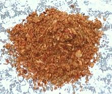

 |
Curry Powder Sri LankaSri Lanka, Tamil - Thool | ||||
| Makes: Effort: Sched: DoAhead: |
6 T ** 20 min Yes |
A Curry Powder used by the Tamil people of Sri Lanka. This recipe 3/4 fills a 4 oz spice jar. The real Tamil pattern recipe made 16 times as much. | |||
|
----- 1/2 4 2 1/4 1/2 4 ----- 1/4 1/2 |
--- T T t t oz --- t t |
-- Dry Roast Cumin seeds Coriander seeds Fennel seeds Fenugreek seeds Red Chili dry (1) Curry Leaves ------------- Turmeric Peppercorns black |
Make: - (20 min)
|